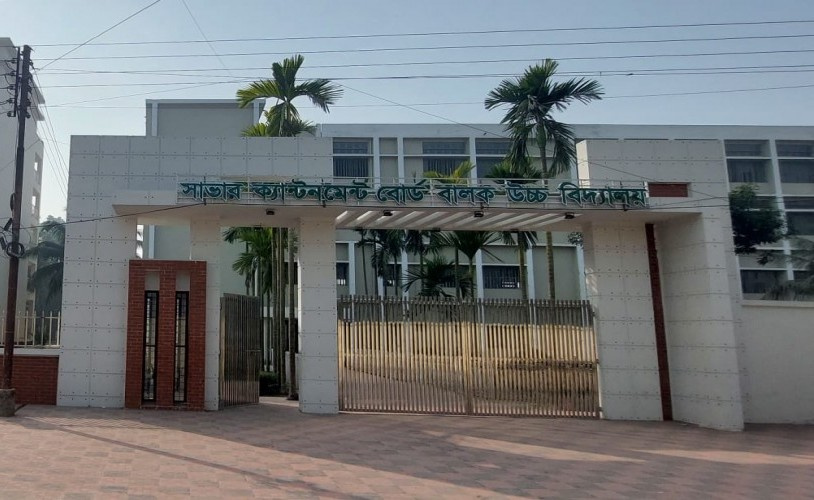

Power BI
Dashboard Creation, Data Modeling, DAX Formulas
Power BI
DAX
Data Modeling
I am a dynamically driven Statistics Honors Student at Pabna University of Science and Technology (PUST). My expertise lies at the intersection of statistical mathematics and programmed data analysis.
As a passionate Data Enthusiast, I excel in transforming ambiguous, complex datasets into polished, actionable business strategies. I thrive on diving deep into data ecosystems, extracting impactful metrics, and presenting them through seamless visual storytelling.
Dashboard Creation, Data Modeling, DAX Formulas
Advanced Functions, Pivot Tables, Data Analysis
Pandas, NumPy, Matplotlib, Seaborn, Scikit-learn
Statistical Analysis and Visualization


Bachelor of Science (B.Sc.) in Statistics
2022 - 2026
Higher Secondary Certificate (HSC)
2018 - 2020

Secondary School Certificate (SSC)
2014 - 2018
Workflow from data cleaning to interpretation using practical datasets and visual diagnostics.
Model training, evaluation metrics, feature engineering, and pipeline thinking.
Advanced querying, joins, data extraction, and business-oriented reporting.